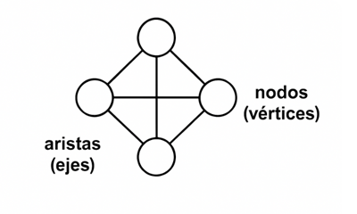

Definición de un Grafo
Un grafo es una estructura de datos formada por un conjunto de nodos o vértices y un conjunto de aristas que representan las conexiones o relaciones entre esos nodos. Permite modelar y analizar sistemas donde los elementos están vinculados entre sí, como redes, rutas, dependencias o interacciones.
Conceptos Clave
- Nodos (Vértices): Son los puntos que representan entidades en el grafo.
- Aristas (Ejes): Son las conexiones entre los nodos que representan relaciones.

Tipos de Grafos
- Grafo NO Dirigido: Las aristas tienen dirección, representada con flechas. La relación va de un nodo a otro, y no necesariamente en ambos sentidos.
- Grafo Dirigido: Las aristas no tienen dirección, por lo que la relación es bidireccional: si A está conectado con B, B también lo está con A.
- Grafo No Simple: Son grafos que permiten la existencia de lazos (aristas que conectan un nodo consigo mismo) y aristas múltiples entre el mismo par de nodos. No tienen las restricciones de un grafo simple.
- Grafo Ponderado: Las aristas tienen un peso o costo, que puede representar distancia, tiempo, capacidad, afinidad u otra medida relevante para el problema.
- Grafo Completo: Son grafos en los que cada nodo está conectado con todos los demás. No falta ninguna arista posible. En un grafo completo de n nodos, existen exactamente n(n−1)/2 aristas si es no dirigido.
- Grafo De Similitud Son grafos donde las aristas representan un grado de similitud entre elementos (nodos). Normalmente son ponderados, y un peso mayor indica mayor similitud entre los nodos conectados.